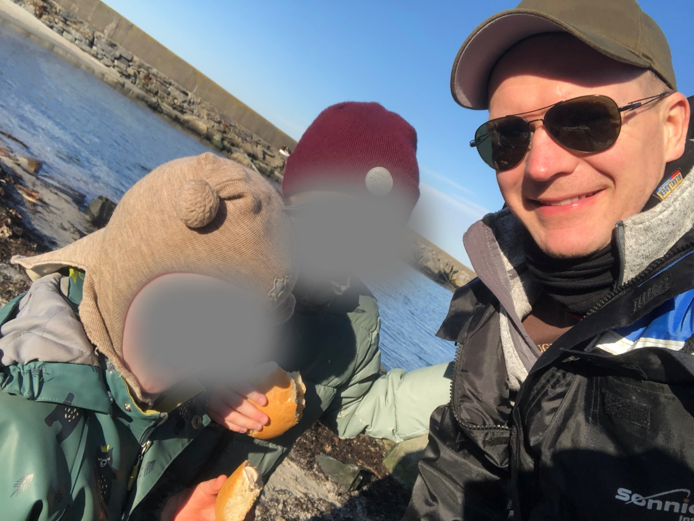

Familien Norli. Vi bor på en gård på Malmheim

Vårt andre hjem. De fleste ferier blir tilbrakt her. Ligger sør for Mandal.

Aktivt medlem siden 2014. Sittet i styret både lokalt og nasjonalt.

Småviltjakta starter 10. September. Jakter både på fjell og sjø.

Jeg bruker tid på friluftsliv både sommer og vinter. Spesielt setter jeg pris på toppturer på truger i vindstille og skyfrie forhold, der naturen virkelig kommer til sin rett.

I en Ironman-konkurranse er mantraet korte steg og langsiktige mål. Man må mestre de fire disiplinene: svømming, sykling, løping og ernæring.